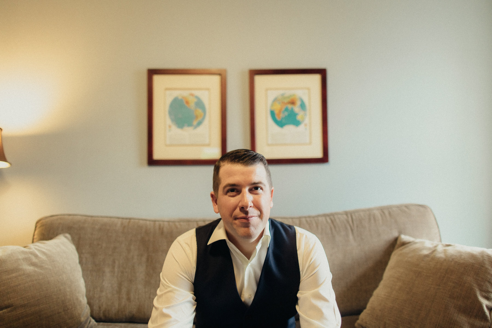

About Me
 My life all started north of the Toronto area in Ontario, Canada. As a young Canadian living on the frozen tundra. I quickly learned how to wrestle polar bears, seals and build igloos.
My family moved to the US while I was still a kid. Shortly after moving to the land of the free, we moved again, this time to the land of the majestic Rocky Mountains... Colorado.
Since moving here, I have been able to travel the county has a hockey referee, working in minor pro and college leagues. I attended Metropolitan State University and received my bachelor's degree in criminal justice and criminology.
After attending college, I achieved my goal of becoming a police officer, where I was able to have some incredible experiences. As I start this new chapter in my life, recently married and working towards becoming a web developer, I'm nothing but excited and eager to learn.